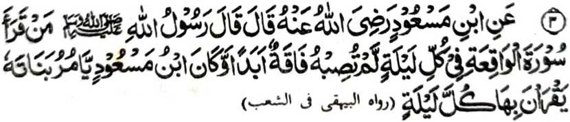

Miyakathitayan ko Ibn-e-Mas’ud (Radhiallaho ‘Anho) a pitharo iyan a pitharo o Rasulollah (Sallallaho ‘Alaihi wa Sallam), “Sa tao a batiya-an niyan so Surah Al-Waqi’ah ko oman gagawi-i na di sekaniyan den masogat a kamermer sa dayon sa dayon.”
Aya wara-an o Ibn-e-Mas’ud na ipezogo iyan ko manga wata iyan a manga babay a pembatiya-a iran ko oman kagagawi-i.
So kalbihan o Surah Al-Waqi’ah na miya-aloy niyan pen ko madakel a Hadith:
Ogaid na si-i ko kaito tano-i panarima na aya kapembatiya-a tano ron pantag bo ko maito a nganin sangka-iya donya. Opama ka aya kapembatiya-a on na pantag ko kasoso-at o poso ago pantag ko phakatondog a darepa, na khakowa tano bo so kamapiya-an sangka-iya donya apiya da tano pamangeniya.